Particle System: Fire Effect
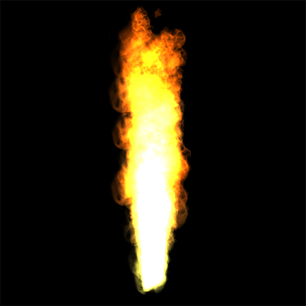
The Fire Effect tutorial illustrates how you can add a fire effect to your scene using the Qt Design Studio particle system.
In this tutorial, you create a project from the beginning. You can download the completed project from here.
This tutorial requires that you know the basics of Qt Design Studio, see Getting Started.
Tutorial Assets
You need the following assets to complete this tutorial:
- fire-sprites.png
- fire-color-table.png
Download the assets here.
Creating a Fire Effect
Creating a Project
To create a new project:
- Open Qt Design Studio.
- On the Welcome Screen, select Create Project.
- In the Presets section, select General > 3D.
- In the Details section, set the name to FireParticles , and select the folder where you want to save the project.
- Select Create.
Next, remove any unwanted default components from the project:
- In the Navigator view, select Text and then select the Delete key.
- In the same way, delete cubeModel.
For a better visual effect, set the background color to black:
- In the Navigator view, select Rectangle and in Properties, set Fill Color to #000000.
Adding a Particle System to Your Scene
To add a particle system, you first need to import the QtQuick3D.Particles3D module to your project:
- In the Components view, select
 .
. - Find QtQuick3D.Particles3D, and select it to add it to your project.
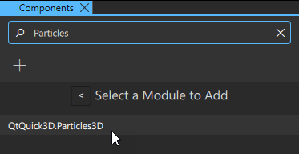
In this project, you use an animated sprite to simulate a fire. For this, use the Animated Sprite particle system template:
- From Components > Qt Quick 3D Particle System Templates drag an Animated Sprite component [1] to scene in Navigator.
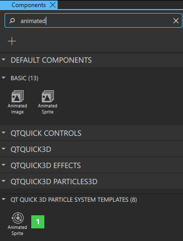
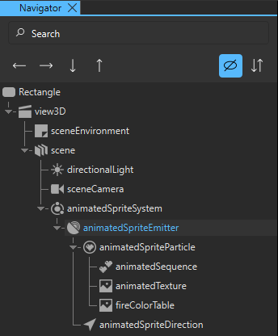
You now have the particle system in place. To preview it, select Alt + P. You can also preview the particle system in the 3D view by using the Particle Editor tools.
Adding Sprites and Sprite Animations
In this project, you use a spritesheet with 3 sprites. A spritesheet is a single image file that contains multiple sprites arranged in a grid. You use these sprites to create a looping animation to add variation to the movement of the flames.
First, import the spritesheet you downloaded in the beginning of this tutorial (fire-sprites.png) to use for the fire:
- In the Assets view, select .
- In the Add Assets dialog, find and select fire-sprites.png.
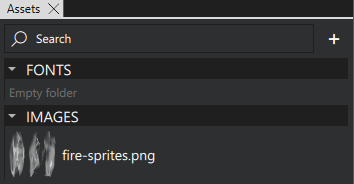
Next, add the spritesheet to the particle system, and create the animation:
- From the Assets view, drag fire-sprites.png to animatedTexture in the Navigator view.
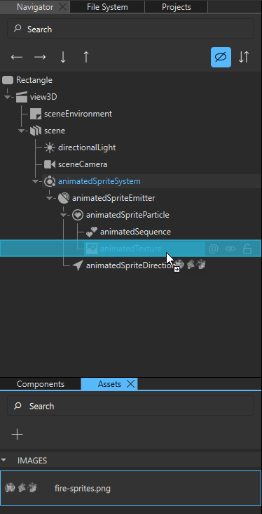
- In the Navigator view, select animatedSequence and in the Properties view, set:
- Frame Count to 3. There are three sprites in fire-sprites.png so you want to divide the image into 3 different sprites for this animation.
- Interpolate to true. This makes the animation between the sprites smooth.
- Random Start to true. This sets the animation for each particle to start from any of the 3 sprites, creating some randomness to the effect.
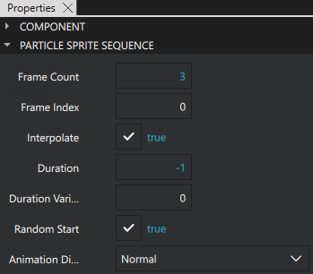
To add color to the sprites, use a color table. With a color table, you change the color of a single sprite during its life span. In this project, you use a gradient color table ranging from yellow to dark orange. This results in the sprites being yellow when they are emitted and dark orange at the end of their life span.
To set the color table:
- Go to the Asstes view and import fire-color-table.png to your project.
- From the Components view, drag a Texture [1] to animatedSpriteParticle in Navigator.
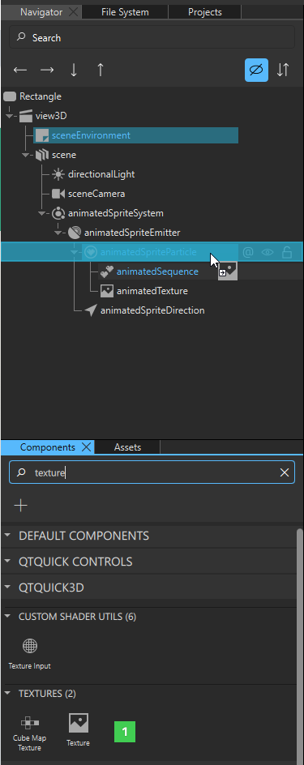
- Rename the texture to fireColorTable.
- In the Navigator view, select fireColorTable and in the Properties view, set Source to fire-color-table.png.
- In the Navigator view, select animatedSpriteParticle and in the Properties view:
- Ensure that Sprite is set to animatedTexture. This sets which image to emit from the particle emitter, which in this case is the spritesheet added earlier.
- Set Particle Scale to 5 to adjust the size of the flames.
- Set Color Table to fireColorTable.
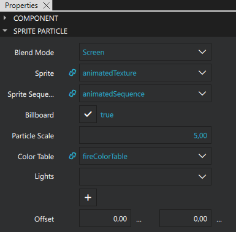
Adjusting the Particle Emitter
The next step is to adjust the particle emitter properties:
- First, in the Navigator view, select animatedSpriteEmitter and then, in the Properties view, set:
- Emit Rate to 300 to emit 300 particles per second.
- Life Span to 2500 to set the life span of each particle to 2500 milliseconds (2.5 seconds).
- Life Span Variation to 100 to set variation to the particle life spans. The life span of each particle is now between 2.4 and 2.6 seconds to make the fire look more realistic.
- Particle End Scale to 1.50. When a particle is emitted, its scale is 1.00 by default. By the end of its life span, it will grow to a scale of 1.50.
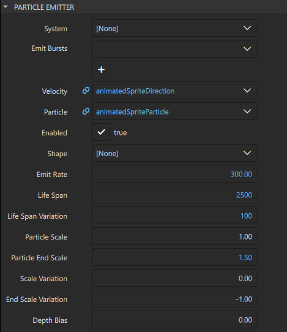
- First, in the Navigator view, select animatedSpriteParticle and then, in the Properties view, set:
- Blend Mode to Screen to blend the fire nicely with the background.
- Max Amount to 1000 to define the maximum amount of particles visible at the same time. Setting a higher number allocates more memory.
- Color Variation > W to 0.50. This adds randomness to the opacity of the sprites.
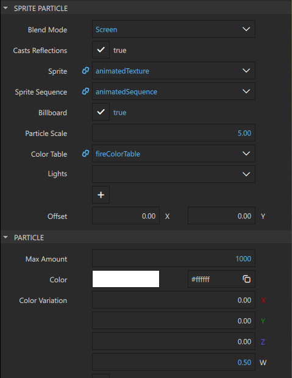
- The animatedSpriteDirection component defines the direction and the velocity of the particles emitted from the particle emitter. In this tutorial, you want the particles to go straight up with a small variation.
In the Navigator view, select animatedSpriteDirection and in the Properties view, set:
- Direction > X to 0 and Direction > Y to 20. This makes the particles go straight up (along the Y axis) at the velocity of 20.
- Direction Variation > X to 3. This adds small variation along the X axis, making the flames a little bit wider.
- Direction Variation > Y to 10. This adds variation to the velocity of the particles along the Y axis. Because this makes some particles slower, the flames appears thicker in the lower part.
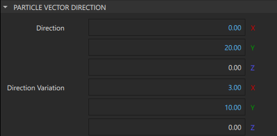
Running the Project
Now, the fire effect is ready. Before you run it, position the camera to show the effect from a suitable perspective:
- In the Navigator view, select sceneCamera and in the Properties view, set:
- Field of View to 20.
- Translation > Y to 35.
- Translation > Z to 350.
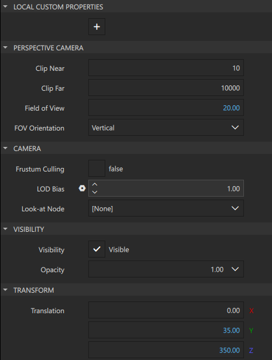
Now, run the project by selecting Ctrl + R or the button in the top toolbar.
See also Particles.